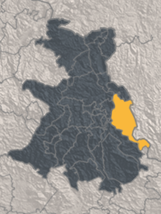

Topónimos
Museo Regional de Guerrero

Montaña
Municipio:
Alcozauca de Guerrero
Nombre original:
Alcozauca

Topónimo
Glifo
La palabra Alcozauca es de origen náhuatl, la cual se representa en el Códice Mendoza con dos glifos:
Cozauqui: amarillo Atl: agua
Lugar que tiene agua amarilla
El agregado Guerrero, se le dio en honor a Vicente Guerrero.